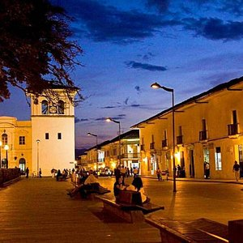

Bienvenido a popayork
Deseamos que tengas la mejor experiencia dentro de nuestra amada ciudad.
ingresar

nuestra cultura e historia
la historia fluye por nuestras calles, somos una ciudad extremadamente rica y diversa en cultura.
ingresarLa ciudad es un lugar muy acogedor y queremos ofrecerte los mejores servicios del sector
ingresar